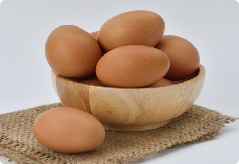
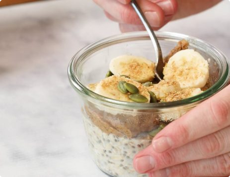
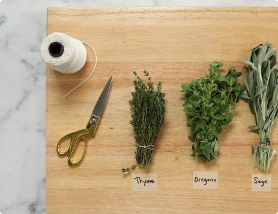
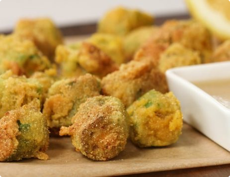
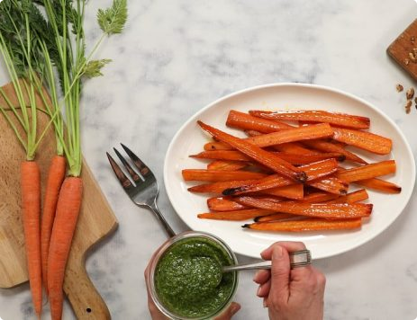

 11 Simple Ways to Cook an Egg  How to Make Overnight Oats with Maple and Caramel May 31, 2023  How to Preserve Fresh Herbs May 31, 2023  How to Prepare Roasted Okra May 20, 2023  How to Make Pesto Using Discarded Greens May 1, 2023